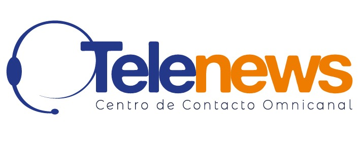
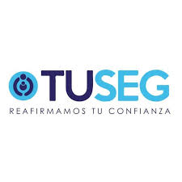
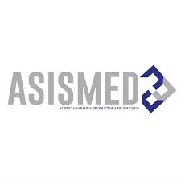
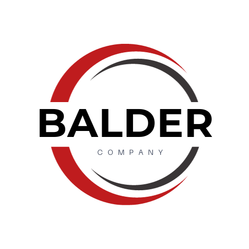
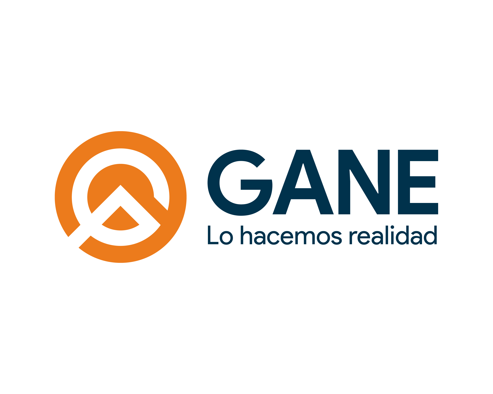

Protección estratégica. Resultados medibles.
Diseñamos sistemas de ciberseguridad, protección de datos y continuidad del negocio que se integran a su operación — no que la detienen. Listos para la auditoría de certificación ISO 27001 en 6 meses, no en 18.
El riesgo real no es solo la multa regulatoria — es la interrupción del negocio y la pérdida de confianza de sus clientes.
Leer el análisis completo →¿Marcó dos o más? No está solo — pero su operación exige una intervención.
Tres frentes que trabajan juntos para que su empresa cumpla la norma sin dejar de operar.
Implementación acelerada de ISO 27001 y gestión de riesgos (ISO 31000) en 6 meses — la mitad del tiempo estándar del mercado.
Ver metodología →Delegado de Protección de Datos con experiencia sectorial. Cumplimiento continuo de la LOPDP sin contratar a tiempo completo.
Ver alcance →Simulacros reales de recuperación y planes alineados a ISO 22301. Una empresa que se recupera en horas tiene ventaja sobre una que tarda días.
Ver enfoque →No vendemos miedo. Construimos resiliencia.
| Criterio | Consultoras tradicionales | Vendedores de software | Protego Consulting |
|---|---|---|---|
| Velocidad | Lenta (12–18 meses) | Inmediata, pero incompleta | Acelerada (6 meses) |
| Enfoque | Cumplimiento de papel | Venta de licencias | Negocio y resiliencia |
| Lenguaje | Auditoría técnica | Especificaciones técnicas | Riesgo financiero |
| Entregable | Documento que nadie prueba | Tecnología genérica | Sistemas resilientes y probados |





Más de 15 años protegiendo la información de empresas críticas. Auditor Líder ISO 27001, experto en ISO 22301 y ISO 31000, y autor del libro "ISO 27001:2022, un enfoque práctico".
"Rigor técnico sin arrogancia. Hablamos el lenguaje de su negocio."
Conocer más sobre César Viteri →Herramienta gratuita: valide si la Política de Privacidad de su sitio web cumple la LOPDP →
Diagnóstico inicial de 60 minutos, sin costo. Revisamos su situación frente a la LOPDP, identificamos brechas críticas y le entregamos un plan de acción — no una propuesta genérica.